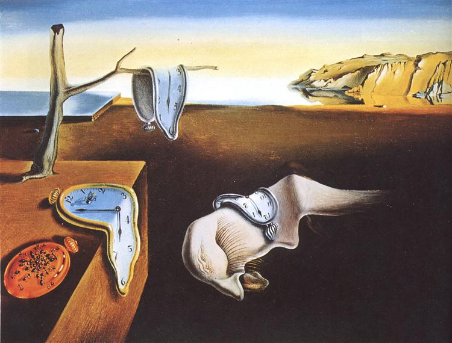

An exploration on commitment, trust, and growth.
The Persistence of Memory by Salvador Dalí
The sound of the waves are nice, huh?
Yeah.
The ebb and the flow of the waves, the toppling of sand sculptures of children. Of so much chaos in the world, the constancy of the ocean and its rises and falls gives me comfort.
You sound quite melancholic. Is everything alright?
… I’ve been thinking about the concept of commitment and trust. And maybe a bit about belonging too.
Can I lend an ear or a shoulder? We can just sit in the sun in quiet if you’d like.
Thank you.
[And they sat there for a while. The sun inched downwards, setting the sky ablaze.]
What do you think it means to commit to an identity?
Hmm. I think there is an element of trust — that the ground below them will hold, that tomorrow will come again, and that the ocean will continue to rise and fall. Trust is an unquestioning attitude, an absence of deliberation over reliability. To commit is to believe it as a truth about oneself.
Do you think identities can change with time?
Yes. I don’t think truth is absolute — I think truth is a function of identity and identity itself is a function of time. Maybe, at this slice in time, certain axioms hold true about the universe. A few hours, years, millennia might pass and those truths might be different. Our different selves can choose between different systems of meaning and sense as our basic axioms.
I think my sense of self is undergoing a shift. It feels very liquid right now. One supposedly is supposed to ‘live in the present’ to enjoy the tea1, but I can’t help but feel… scattered. I feel like I am trying to live too many lives at once and I feel the very fabric of my being being tugged at the seams.
I think empathy is a means of time dilation. For one to slow down or speed up their rate of life to match another. Of course, to constantly time travel to bridge the worlds of slow and fast is incredibly tiring. You must be very worn.
I want to be whole again. I want to be able to pour my everything in one life and to live that life well.
I understand. What is stopping you?
Well. What does it mean to responsible to a commitment that a past self has made? I promised [x] to some people very dear to me. At the time, it very much felt like the right thing to promise. I think my selves have changed though. The me that used to really enjoy [x] doesn’t get that same spark, that same excitement as it used to. I found [y] pretty recently, and it gives me so much life to put time aside to work on it. Yet, I feel guilty. I made a commitment. A promise. It feels selfish to go back on that. I want to be someone who is reliable — someone people can depend on and trust unquestioningly.
Ah yes, the desire to be a constant in the lives of others, yet to be fluid and growing in the life of your own. It is an unfortunate truth in life that we rarely get to choose both.
Is is possible? With all the time flowing through my hands, I am afraid that I am reaching for too much and end up not catching any at all.
Well, let’s see. What do you like so much about [y]?
I think recently, I’ve been able to better articulate the questions I want to spend my life answering. I think I’ve grown as a person and [y] aligns much more with what I want in the future, both in terms of myself and and the people I surround myself with. [x] feels like the trappings of the past, the remnants of a self I’m not sure I still consider my own. Yet, I am scared to let go of [x].
I think you are still muddled. I think what you lack is self-belief. The people in [y] inspire you, they amaze you. They have a ceiling of self-belief so high that it raises yours just through osmosis. These people are flawed too. They come from histories of [x], yet they still believe in themselves and what they want. Surround yourself with people in [y], for they are free in ways you’re not2. They are playing an infinite game in the hopes of waking you from the finite one you play in.
What shall I do?
[Both held their palms up to sunset.]
Even if it is not your ideal life, you can always choose it. No matter what your life is, choosing it changes everything. I think you need to work on transitioning out of doing [x]. The self that committed to doing [x] has moved on. The self that is here and present needs to deal with the consequences of the past, but is not a slave to it. How we spend our days is, of course, how we spend our lives3. What we do with this hour and that one is what we are doing. What can you do to make your days meaningful? I think [y].
[The two sat in silence, their silhouettes indistinguishable in the fading sunlight.]
Thank you for your company, your space, and your time. I want to take the necessary time to ease out of [x] and to do it with care and tenderness.
You and me, we are not so different. One of us might be a few chapters ahead, but you’ll be back at this beach someday. I’ll be going now. See you soon.
Yes, I hope so.
[And the waves continued to crash down. One got up to leave, another came to sit down.]
The sound of the waves are nice, huh?
Yeah.
Footnotes
-
Thich Nhat Hanh’s Tea Meditation ↩
-
Patricia Mou, Rabbit Holes ↩
-
Annie Dillard, The Writing Life ↩